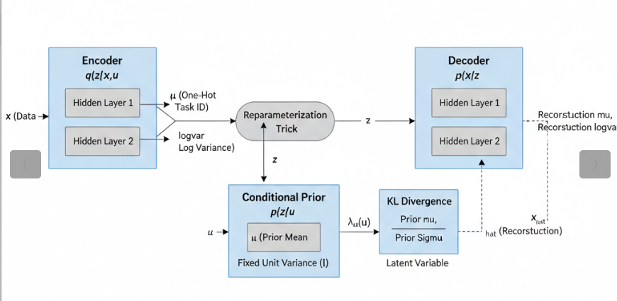
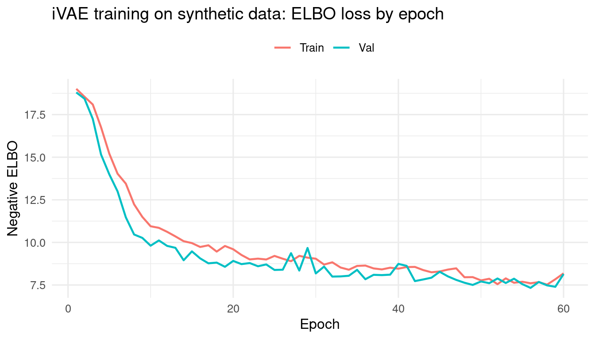
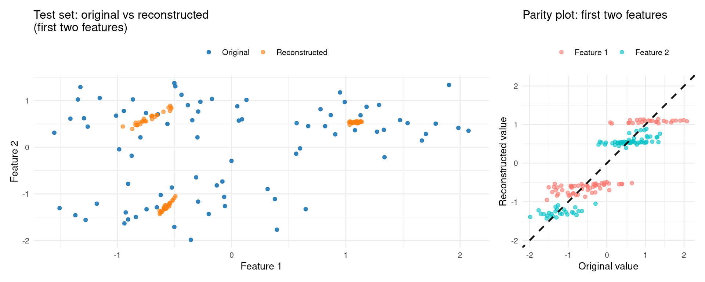

Code
packages <- c(
"torch",
"HDclassif",
"tidyverse",
"tidyr",
"corrplot",
"patchwork",
"mlr3",
"mlr3tuning",
"paradox",
"Matrix",
"RCausalML",
"Rcpp"
)
Standard Variational Autoencoders are expressive generative models, but they suffer from a fundamental statistical weakness: their latent representations are not identifiable. In practice, many different latent spaces can produce the same data distribution, meaning the model has no way to pin down which latent structure is the “true” one. This ambiguity makes it impossible to reliably recover the underlying factors of variation, which is precisely what causal inference and disentanglement require.
Identifiable VAEs (iVAEs), introduced by Khemakhem et al. (2020), solve this problem by conditioning the latent prior on an observed auxiliary variable \(u\) — for example, a class label, a time index, or an experimental context. This single change is enough to break the symmetry that causes non-identifiability, and the authors prove rigorously that the resulting model can recover the true latent factors up to a simple coordinate-wise transformation (permutation and element-wise rescaling). In effect, iVAEs bridge deep generative modelling with nonlinear Independent Component Analysis (ICA), inheriting the theoretical guarantees of the latter.
For causal inference, identifiability matters because estimating treatment effects requires that the latent representation capture the correct confounding structure — not just a representation that happens to fit the data. iVAEs provide that assurance.
These three notebooks collectively cover the main families of deep generative models for causal inference. They share the VAE backbone but make fundamentally different assumptions about the latent space, and each is the right tool in a different setting. The table below places iVAE in that landscape before we dive into its architecture.
| Model | Latent structure | What is learned | Key assumption | Best suited for |
|---|---|---|---|---|
| CEVAE | Independent \(z\); \(x\) are noisy proxies | Latent confounder recovered from proxy covariates | Ignorability holds in latent space | Settings where the true confounders are unobserved but leave a measurable trace in \(x\) |
| iVAE | Independent \(z\); prior conditioned on \(u\) | Identifiable latent factors anchored by an auxiliary variable | Sufficient variation in \(u\); injective decoder | Settings where an observed context variable (label, time, environment) can anchor the latent space |
| CausalVAE | DAG over \(z\); \(\varepsilon\) are independent exogenous noises | Causal graph and structural equations jointly | DAG is acyclic; weak supervision on graph structure | Settings where the causal relationships among latent factors need to be modelled and intervened on |
The key conceptual distinction is what each model treats as the source of non-identifiability and how it resolves it:
Reading these three notebooks in sequence — CEVAE → iVAE → CausalVAE — traces a progression from bias removal to identifiable representation to explicit causal structure.
The iVAE extends the standard VAE by introducing a conditional prior \(p(z \mid u)\) in place of the fixed standard Gaussian prior \(\mathcal{N}(0, I)\). Every component of the model is described below.
Unlike the standard VAE encoder which sees only \(x\), the iVAE encoder receives both \(x\) and \(u\). It passes them through shared hidden layers and outputs two parameter vectors:
Together, these define the distribution \(q(z \mid x, u) = \mathcal{N}(\mu(x,u),\, \text{diag}(\sigma^2(x,u)))\), a Gaussian whose location and spread depend on the full observed context.
This is the architectural innovation that drives identifiability. In a standard VAE the prior \(\mathcal{N}(0,I)\) is completely static — it carries no information about what the data actually is. In the iVAE, a small neural network \(g(u)\) maps the auxiliary variable to a context-specific prior mean:
\[p(z \mid u) = \mathcal{N}(g(u),\, I)\]
Because the prior now shifts as \(u\) changes, different segments of the data are anchored to different regions of the latent space. This is what prevents the latent axes from rotating freely and what ultimately enables identifiability.
In the fully general treatment (Khemakhem et al., 2020) the prior belongs to the exponential family:
\[p(z_i \mid u) = \exp\!\bigl(T_i(z_i) \cdot \lambda_i(u) - \log A(\lambda_i(u))\bigr)\]
where \(T_i(z_i)\) are sufficient statistics and \(\lambda_i(u)\) are natural parameters that vary with \(u\). The Gaussian formulation above is the special case used in most practical implementations, including the one in this notebook.
To allow gradients to flow through the stochastic sampling step, the model uses the standard reparameterization trick:
\[z = \mu + \sigma \odot \varepsilon, \qquad \varepsilon \sim \mathcal{N}(0, I)\]
This expresses the random sample as a deterministic function of the distributional parameters plus independent noise, making backpropagation through \(z\) straightforward.
The decoder maps the latent code \(z\) back to data space to produce a reconstruction \(\hat{x}\). Crucially, the decoder does not see \(u\). All information needed to reconstruct \(x\) must pass through \(z\). This architectural constraint forces the encoder to compress everything about \(x\) that is not already explained by the conditional prior into the latent code.
The iVAE is trained by maximizing the following Evidence Lower Bound (ELBO):
\[\mathcal{L}_{\text{iVAE}} = \mathbb{E}_{q(z \mid x, u)}\!\bigl[\log p(x \mid z)\bigr] - D_{\mathrm{KL}}\!\bigl(q(z \mid x, u) \,\|\, p(z \mid u)\bigr)\]
Comparing this with the standard VAE objective:
\[\mathcal{L}_{\text{VAE}} = \mathbb{E}_{q(z \mid x)}\!\bigl[\log p(x \mid z)\bigr] - D_{\mathrm{KL}}\!\bigl(q(z \mid x) \,\|\, \mathcal{N}(0, I)\bigr)\]
the difference is entirely in the KL term. In the iVAE, the encoder posterior is compared against the context-specific prior \(p(z \mid u)\) rather than a fixed zero-mean Gaussian. This forces latent codes belonging to the same context \(u\) to cluster around the prior mean \(g(u)\), creating distinct, anchored regions in latent space for each value of \(u\).
The reconstruction term is unchanged: it measures how faithfully the decoder recovers \(x\) from \(z\).

Three conditions together guarantee that the latent representation is identifiable (recoverable up to permutation and element-wise scaling):
Injective mixing function. The map from latent \(z\) to data \(x\) must be one-to-one: no two distinct latent codes can produce the same observation. This prevents the model from “hiding” distinct causal factors inside the same data point.
Sufficient variation in \(u\). The auxiliary variable must genuinely shift the prior across its different values. If \(p(z \mid u)\) were identical for all \(u\), the model would collapse back to an unidentifiable standard VAE. In practice, the number of distinct values of \(u\) must be large enough relative to the latent dimensionality.
Conditional independence of latent components. Given \(u\), the components of \(z\) must be statistically independent. This is what allows each component to be recovered separately without interference from the others.
When all three conditions hold, Khemakhem et al. (2020) prove that the learned encoder recovers the true latent factors — even when the mixing function is a deep nonlinear network.
The implementation below uses the torch package through the {RCausalML} package, which provides the iVAE() constructor and the elbo_loss() function. We fit the model on a synthetic multi-class dataset designed to mimic the structure of a controlled experiment, then examine reconstruction quality, latent structure, and the alignment between latent dimensions and input features.
Following R packages are required to run this notebook. If any of these packages are not installed, you can install them using the code below:
torch, HDclassif, tidyverse, tidyr, corrplot, patchwork, mlr3, mlr3tuning, paradox, Matrix, RCausalML, Rcpp
packages <- c(
"torch",
"HDclassif",
"tidyverse",
"tidyr",
"corrplot",
"patchwork",
"mlr3",
"mlr3tuning",
"paradox",
"Matrix",
"RCausalML",
"Rcpp"
)# Install missing packages
# new_packages <- packages[!(packages %in% installed.packages()[, "Package"])]
# if (length(new_packages)) install.packages(new_packages)# Load packages with suppressed messages
invisible(lapply(packages, function(pkg) {
suppressPackageStartupMessages(library(pkg, character.only = TRUE))
}))# Check loaded packages
cat("Successfully loaded packages:\n")Successfully loaded packages: [1] "package:Rcpp" "package:RCausalML" "package:Matrix"
[4] "package:mlr3tuning" "package:paradox" "package:mlr3"
[7] "package:patchwork" "package:corrplot" "package:lubridate"
[10] "package:forcats" "package:stringr" "package:dplyr"
[13] "package:purrr" "package:readr" "package:tidyr"
[16] "package:tibble" "package:ggplot2" "package:tidyverse"
[19] "package:HDclassif" "package:MASS" "package:torch"
[22] "package:stats" "package:graphics" "package:grDevices"
[25] "package:utils" "package:datasets" "package:methods"
[28] "package:base" # Load iVAE from package source if not already available in installed version
pkg_src <- "/home/zia207/Github/RCausalML"
if (!exists("iVAE", mode = "function") && requireNamespace("devtools", quietly = TRUE)) {
try(devtools::load_all(pkg_src, quiet = TRUE), silent = TRUE)
}
if (!exists("iVAE", mode = "function")) {
stop(
"iVAE() is not in your installed RCausalML. Reinstall from the package root:\n",
" devtools::install() or R CMD INSTALL ."
)
}device <- if (torch::cuda_is_available()) "cuda" else "cpu"
cat("Using device:", device, "\n")Using device: cuda set.seed(42)
torch::torch_manual_seed(42L)We construct a synthetic dataset with three class-specific Gaussian clusters in 13-dimensional input space. The class label plays the role of the auxiliary variable \(u\): each class defines a distinct prior mean in the latent space. This setup is deliberately analogous to a multi-environment experiment, where each “environment” or “task” anchors a different region of the latent space — exactly the structure that iVAE identifiability theory exploits.
The data are standardized before training so that each input feature contributes on the same scale to the reconstruction loss.
set.seed(42)
n_samples_syn <- 400
input_dim_syn <- 13
n_aux_syn <- 3
n_per_class <- c(
floor(n_samples_syn / n_aux_syn),
floor(n_samples_syn / n_aux_syn),
n_samples_syn - 2 * floor(n_samples_syn / n_aux_syn)
)
# Each class has its own mean vector, separated enough to create
# distinct prior anchors in the latent space.
class_means <- lapply(0:(n_aux_syn - 1), function(k) {
rnorm(input_dim_syn) * 2 + k * 3
})
X_syn_list <- list()
y_syn_list <- list()
for (k in 0:(n_aux_syn - 1)) {
cov_mat <- diag(input_dim_syn) * 0.5 +
matrix(runif(input_dim_syn^2) * 0.1, input_dim_syn, input_dim_syn)
cov_mat <- (cov_mat + t(cov_mat)) / 2
n_k <- n_per_class[k + 1]
chol_cov <- chol(cov_mat)
X_k <- matrix(rnorm(n_k * input_dim_syn), n_k, input_dim_syn) %*% chol_cov +
matrix(class_means[[k + 1]], n_k, input_dim_syn, byrow = TRUE)
X_syn_list[[k + 1]] <- X_k
y_syn_list[[k + 1]] <- rep(k, n_k)
}
X_syn_raw <- do.call(rbind, X_syn_list)
y_syn <- unlist(y_syn_list)
# Standardize features
X_syn_mean <- colMeans(X_syn_raw)
X_syn_sd <- apply(X_syn_raw, 2, sd)
X_syn <- matrix(as.numeric(scale(X_syn_raw,
center = X_syn_mean,
scale = X_syn_sd)),
nrow = nrow(X_syn_raw))
# Stratified 80/20 train–test split
set.seed(42)
train_idx <- c()
test_idx <- c()
for (cls in unique(y_syn)) {
idx_cls <- which(y_syn == cls)
n_test <- round(0.2 * length(idx_cls))
test_samp <- sample(idx_cls, n_test)
train_samp <- setdiff(idx_cls, test_samp)
train_idx <- c(train_idx, train_samp)
test_idx <- c(test_idx, test_samp)
}
x_train_syn <- X_syn[train_idx, ]
x_test_syn <- X_syn[test_idx, ]
u_train_syn <- y_syn[train_idx]
u_test_syn <- y_syn[test_idx]
cat(sprintf("Synthetic data: %d samples, %d features, %d classes\n",
nrow(X_syn), input_dim_syn, n_aux_syn))Synthetic data: 400 samples, 13 features, 3 classesTrain: 319 | Test: 81We instantiate the iVAE with a 4-dimensional latent space — substantially lower than the 13-dimensional input — and 128-unit hidden layers. The latent dimensionality is deliberately small so that the model must find a compact, structured representation rather than simply memorizing the inputs.
Training uses the Adam optimizer with mild weight decay. Gradient clipping is applied to stabilize the early epochs when the KL term can otherwise dominate and prevent the encoder from learning useful representations.
latent_dim_syn <- 4
model_syn <-iVAE(
input_dim = input_dim_syn,
latent_dim = latent_dim_syn,
hidden_dim = 128,
n_aux = n_aux_syn,
dropout = 0.15
)
model_syn$to(device = device)
optimizer_syn <- optim_adam(model_syn$parameters, lr = 1e-3, weight_decay = 1e-5)
epochs_syn <- 60
batch_size_syn <- 32
train_losses_syn <- numeric(epochs_syn)
val_losses_syn <- numeric(epochs_syn)
# Evaluation helper: average ELBO over mini-batches without gradient tracking
evaluate_model <- function(model, X, u, batch_size = 64) {
model$eval()
n <- nrow(X)
total_loss <- 0
n_batches <- 0
with_no_grad({
for (start in seq(1, n, by = batch_size)) {
end <- min(start + batch_size - 1, n)
x_batch <- torch_tensor(X[start:end, , drop = FALSE],
dtype = torch_float())$to(device = device)
u_batch <- torch_tensor(u[start:end],
dtype = torch_long())$to(device = device)
out <- model(x_batch, u_batch)
loss <- elbo_loss(x_batch,
out$dec_mu, out$dec_logvar,
out$enc_mu, out$enc_logvar,
out$prior_mu, out$prior_logvar)
total_loss <- total_loss + loss$item()
n_batches <- n_batches + 1
}
})
total_loss / n_batches
}
# Main training loop
n_train <- nrow(x_train_syn)
for (epoch in seq_len(epochs_syn)) {
model_syn$train()
shuf_idx <- sample(n_train)
train_loss <- 0
n_batches <- 0
for (start in seq(1, n_train, by = batch_size_syn)) {
end <- min(start + batch_size_syn - 1, n_train)
idx_batch <- shuf_idx[start:end]
x_batch <- torch_tensor(x_train_syn[idx_batch, , drop = FALSE],
dtype = torch_float())$to(device = device)
u_batch <- torch_tensor(u_train_syn[idx_batch],
dtype = torch_long())$to(device = device)
optimizer_syn$zero_grad()
out <- model_syn(x_batch, u_batch)
loss <- elbo_loss(x_batch,
out$dec_mu, out$dec_logvar,
out$enc_mu, out$enc_logvar,
out$prior_mu, out$prior_logvar)
loss$backward()
nn_utils_clip_grad_norm_(model_syn$parameters, max_norm = 5.0)
optimizer_syn$step()
train_loss <- train_loss + loss$item()
n_batches <- n_batches + 1
}
train_avg_syn <- train_loss / n_batches
val_avg_syn <- evaluate_model(model_syn, x_test_syn, u_test_syn)
train_losses_syn[epoch] <- train_avg_syn
val_losses_syn[epoch] <- val_avg_syn
if (epoch == 1 || epoch %% 15 == 0) {
cat(sprintf("Epoch %2d/%d — train ELBO: %.4f | val ELBO: %.4f\n",
epoch, epochs_syn, train_avg_syn, val_avg_syn))
}
}Epoch 1/60 — train ELBO: 19.0114 | val ELBO: 18.8006
Epoch 15/60 — train ELBO: 9.9596 | val ELBO: 9.4737
Epoch 30/60 — train ELBO: 9.0439 | val ELBO: 8.1801
Epoch 45/60 — train ELBO: 8.2946 | val ELBO: 8.2763
Epoch 60/60 — train ELBO: 8.1864 | val ELBO: 8.1433cat("Training complete.\n")Training complete.The plot below shows the negative ELBO over training. A well-behaved run sees both curves decline quickly in the early epochs (reconstruction improving) and then converge smoothly (the KL term settling as the posterior anchors to the conditional prior). A persistent gap between training and validation loss would suggest overfitting to the small synthetic dataset; approximate parity indicates that the model has learned a generalizable latent structure.
df_loss_syn <- data.frame(
Epoch = seq_len(epochs_syn),
Train = train_losses_syn,
Val = val_losses_syn
)
df_long_syn <- df_loss_syn |>
pivot_longer(cols = c(Train, Val), names_to = "Type", values_to = "Loss")
ggplot(df_long_syn, aes(x = Epoch, y = Loss, color = Type)) +
geom_line(linewidth = 0.8) +
labs(
title = "iVAE training on synthetic data: ELBO loss by epoch",
x = "Epoch", y = "Negative ELBO", color = ""
) +
theme_minimal(base_size = 12) +
theme(legend.position = "top")
After training, we pass the test set through the full encoder–decoder pipeline and compare the reconstructions \(\hat{x}\) with the original inputs \(x\). The scatter plot on the left overlays original and reconstructed points in the space of the first two input features; the parity plot on the right plots original against reconstructed values directly — perfect reconstruction would align all points on the diagonal.
model_syn$eval()
x_test_tensor_syn <- torch_tensor(x_test_syn, dtype = torch_float())$to(device = device)
u_test_tensor_syn <- torch_tensor(u_test_syn, dtype = torch_long())$to(device = device)
with_no_grad({
enc_out_syn <- model_syn$encode(x_test_tensor_syn, u_test_tensor_syn)
z_syn_test <- enc_out_syn$mu
dec_out_syn <- model_syn$decode(z_syn_test)
x_recon_syn <- dec_out_syn$mu
})
x_orig_syn_np <- as.matrix(x_test_syn)
x_recon_syn_np <- as.matrix(x_recon_syn$squeeze(2)$cpu())
df_orig <- data.frame(f1 = x_orig_syn_np[, 1], f2 = x_orig_syn_np[, 2], Type = "Original")
df_recon <- data.frame(f1 = x_recon_syn_np[, 1], f2 = x_recon_syn_np[, 2], Type = "Reconstructed")
df_scatter <- rbind(df_orig, df_recon)
p1 <- ggplot(df_scatter, aes(x = f1, y = f2, color = Type, alpha = Type)) +
geom_point(size = 1.5) +
scale_alpha_manual(values = c("Original" = 0.9, "Reconstructed" = 0.6)) +
scale_color_manual(values = c("Original" = "#1f77b4", "Reconstructed" = "#ff7f0e")) +
labs(
title = "Test set: original vs reconstructed\n(first two features)",
x = "Feature 1", y = "Feature 2", color = "", alpha = ""
) +
theme_minimal(base_size = 10) +
theme(legend.position = "top")
df_parity <- data.frame(
Original = c(x_orig_syn_np[, 1], x_orig_syn_np[, 2]),
Reconstructed = c(x_recon_syn_np[, 1], x_recon_syn_np[, 2]),
Feature = rep(c("Feature 1", "Feature 2"), each = nrow(x_orig_syn_np))
)
lim_range <- range(c(df_parity$Original, df_parity$Reconstructed))
p2 <- ggplot(df_parity, aes(x = Original, y = Reconstructed, color = Feature)) +
geom_point(size = 1.5, alpha = 0.6) +
geom_abline(intercept = 0, slope = 1, linetype = "dashed",
color = "black", linewidth = 0.8) +
coord_equal(xlim = lim_range, ylim = lim_range) +
labs(
title = "Parity plot: first two features",
x = "Original value", y = "Reconstructed value", color = ""
) +
theme_minimal(base_size = 10) +
theme(legend.position = "top")
p1 + p2
A key diagnostic for an identifiable model is whether the learned latent space organizes observations by their true generating class. The left panel below plots the first two latent dimensions on the test set, colored by class \(u\). Clear separation indicates that the conditional prior has successfully anchored each class to a distinct region. The right panel shows the same class coloring in the original 13-dimensional input space (projected to the first two features), providing a reference for how much structure already existed in the raw data.
z_syn_np <- as.matrix(z_syn_test$squeeze(2)$cpu())
u_test_fac <- factor(u_test_syn, labels = paste0("Class ", 0:(n_aux_syn - 1)))
df_latent_syn <- data.frame(z1 = z_syn_np[, 1], z2 = z_syn_np[, 2], Class = u_test_fac)
df_input_syn <- data.frame(f1 = x_orig_syn_np[, 1], f2 = x_orig_syn_np[, 2], Class = u_test_fac)
p3 <- ggplot(df_latent_syn, aes(x = z1, y = z2, color = Class)) +
geom_point(size = 1.5, alpha = 0.7) +
labs(
title = "Learned latent space (test set)\ncolored by auxiliary class u",
x = "Latent dimension z₁", y = "Latent dimension z₂"
) +
theme_minimal(base_size = 10) +
theme(legend.position = "top")
p4 <- ggplot(df_input_syn, aes(x = f1, y = f2, color = Class)) +
geom_point(size = 1.5, alpha = 0.7) +
labs(
title = "Input space (test set, first 2 features)\ncolored by auxiliary class u",
x = "Feature 1", y = "Feature 2"
) +
theme_minimal(base_size = 10) +
theme(legend.position = "top")
p3 + p4
The heatmap below reports Pearson correlations between each of the four learned latent dimensions (\(z_1\)–\(z_4\)) and the first five input features on the test set. Strong correlations (positive or negative) indicate that a latent dimension has specialized to capture variation in a particular input feature. In an ideally identifiable model, each latent dimension should align predominantly with one or a small number of independent sources of variation rather than diffusely mixing information from all features.
n_show_syn <- min(5, input_dim_syn)
corr_mat_syn <- cor(z_syn_np, x_orig_syn_np[, 1:n_show_syn])
df_corr_syn <- as.data.frame(corr_mat_syn)
df_corr_syn$z_dim <- paste0("z", 1:nrow(corr_mat_syn))
df_corr_long_syn <- df_corr_syn |>
pivot_longer(-z_dim, names_to = "Feature", values_to = "Correlation") |>
mutate(
z_dim = factor(z_dim, levels = paste0("z", nrow(corr_mat_syn):1)),
Feature = factor(Feature,
levels = paste0("V", 1:n_show_syn),
labels = paste0("Feature ", 1:n_show_syn))
)
ggplot(df_corr_long_syn, aes(x = Feature, y = z_dim, fill = Correlation)) +
geom_tile(color = "white") +
geom_text(aes(label = sprintf("%.2f", Correlation)), size = 3) +
scale_fill_gradient2(low = "#4575b4", mid = "white", high = "#d73027",
midpoint = 0, limits = c(-1, 1)) +
labs(
title = "Test set: Pearson correlation between\nlearned latent dimensions and input features",
x = NULL, y = NULL
) +
theme_minimal(base_size = 10) +
theme(axis.text.x = element_text(angle = 30, hjust = 1))
iVAEs extend standard VAEs by replacing the uninformative fixed prior with a conditional prior \(p(z \mid u)\) that depends on an observed auxiliary variable. This single change has profound theoretical consequences: under mild regularity conditions, the learned latent representation is provably identifiable up to permutation and element-wise scaling, meaning the model recovers the true underlying factors of variation rather than an arbitrary rotation of them. For causal inference, this property is essential — estimating average or individual treatment effects requires that the model capture the correct confounding structure, not merely a structure that fits the data.
The synthetic experiment above illustrates the key behaviors to look for in practice:
Future directions for this framework include applying iVAEs to real-world observational datasets where the auxiliary variable is a treatment indicator or an experimental environment, integrating the identifiable latent representation with downstream causal estimators (e.g., meta-learners or double machine learning), and exploring extensions that relax the requirement for a fully observed \(u\) by learning the auxiliary structure jointly with the generative model.
torch package: mlverse/torch